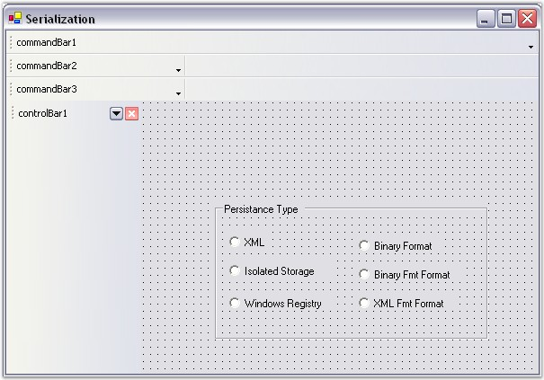
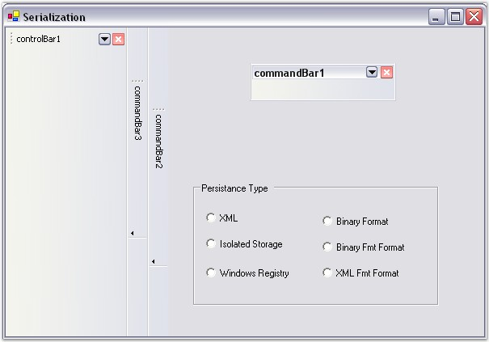

The layout state of a CommandBar object can be saved and loaded in the formats given below.
· XML
· Binary Format
· Isolated Storage
· Windows Registry
Persistence Support
The CommandBarController provides support to save the persisted state of the CommandBar.
|
CommandBarController Property |
Description |
|
PersistState |
Specifies whether the application's CommandBar state should be persisted. |
|
[C#]
this.commandBarController1.PersistState = true; |
|
[VB.NET]
Me.commandBarController1.PersistState = True |
AppStateSerializer class
The AppStateSerializer class provides a mechanism for coordinating the serialization behavior of multiple components.
The following step by step procedure helps you to save and load the layout state of the CommandBar and ControlBar objects.
1. Drag and drop the CommandBarController from the toolbox onto the form, add radio buttons for layout options as in the figure given below.
2. Add CommandBars and ControlBars through the design time verbs of the CommandBarController.

Figure 34: CommandBars and ControlBars added Through Designer
3. Include the required namespaces.
|
[C#]
using Syncfusion.Runtime.Serialization; using System.IO; using System.Xml; using Microsoft.Win32; using Syncfusion.Windows.Forms.Tools; |
|
[VB.NET]
Imports Syncfusion.Runtime.Serialization Imports System.IO Imports System.Xml Imports Microsoft.Win32 Imports Syncfusion.Windows.Forms.Tools |
4. Declare instances of RegistryKey and MemoryStream classes.
|
[C#]
RegistryKey rootKey; private string selRad; private MemoryStream memstream; |
|
[VB.NET]
Private rootKey As RegistryKey Private selRad As String Private memstream As MemoryStream |
5. In the Form Load event, use the following code snippet.
|
[C#]
private void Form1_Load(object sender, System.EventArgs e) { // Get the path of subKey. rootKey = Registry.CurrentUser.OpenSubKey("Config"); // Retrieve the data associated with the subKey. selRad = (string) rootKey.GetValue("PersistType"); if(selRad ==null) selRad = "XML"; AppStateSerializer app = GetSerializer(selRad); if(app != null) // Retrieve the saved layout state of CommandBar objects using AppStateSerializer class. this.commandBarController1.LoadCommandBarState(app); } |
|
[VB.NET]
Private Sub Form1_Load(ByVal sender As Object, ByVal e As System.EventArgs) ' Get the path of subKey. rootKey = Registry.CurrentUser.OpenSubKey("Config") ' Retrieve the data associated with the subKey. selRad = CStr(rootKey.GetValue("PersistType")) If selRad Is Nothing Then selRad = "XML" End If Dim app As AppStateSerializer = GetSerializer(selRad) If Not app Is Nothing Then ' Retrieve the saved layout state of CommandBar objects using AppStateSerializer class. Me.commandBarController1.LoadCommandBarState(app) End If End Sub |
6. Serialization can be accomplished using the AppStateSerializer class.
|
[C#]
private AppStateSerializer GetSerializer(string str) { AppStateSerializer state; switch (str) { //XML file is used to read/write the layout information case "XML": state = new AppStateSerializer(SerializeMode.XMLFile, @"C:\StateInfo"); break;
//Binary file is used to read/write the layout information case "Binary Format": state = new AppStateSerializer(SerializeMode.BinaryFile, @"C:\StateInfo"); break;
//Win32 windowsRegistry is used to read/write the layout information case "Windows Registry": Microsoft.Win32.RegistryKey rootKey = Microsoft.Win32.Registry.CurrentUser.CreateSubKey(@"Software\CommandBar\State"); state= new AppStateSerializer(SerializeMode.WindowsRegistry,rootKey); break;
//Isolated storage is used to read/write the layout information case "Isolated Storage": state= new AppStateSerializer(SerializeMode.IsolatedStorage,"StateInfo", System.IO.IsolatedStorage.IsolatedStorageScope.User); break;
default: state = null; break; } return (state); } |
|
[VB.NET]
Private Function GetSerializer(ByVal str As String) As AppStateSerializer Dim state As AppStateSerializer Select Case str
'XML file is used to read/write the layout information Case "XML" state = New AppStateSerializer(SerializeMode.XMLFile, "C:\StateInfo")
'Binary file is used to read/write the layout information Case "Binary Format" state = New AppStateSerializer(SerializeMode.BinaryFile, "C:\StateInfo")
'Win32 windowsRegistry is used to read/write the layout information Case "Windows Registry" Dim rootKey As Microsoft.Win32.RegistryKey = Microsoft.Win32.Registry.CurrentUser.CreateSubKey("Software\CommandBar\State") state = New AppStateSerializer(SerializeMode.WindowsRegistry, rootKey)
'Isolated storage is used to read/write the layout information Case "Isolated Storage" state = New AppStateSerializer(SerializeMode.IsolatedStorage, "StateInfo", System.IO.IsolatedStorage.IsolatedStorageScope.User) Case Else state = Nothing End Select Return (state) End Function |
7. In the Form Closing event, use the following code snippet.
|
[C#]
private void Form1_Closing(object sender, System.ComponentModel.CancelEventArgs e) { selRad = this.getSelRad(); rootKey = Registry.CurrentUser.CreateSubKey("Config"); rootKey.SetValue("PersistType",selRad); AppStateSerializer app = this.GetSerializer(selRad); if(app != null) { // Store the current layout state of CommandBar objects using AppStateSerializer class. this.commandBarController1.SaveCommandBarState(app); app.PersistNow(); } }
private string getSelRad() { RadioButton radReturn = new RadioButton(); foreach(Control ctrl in this.groupBox1.Controls) { RadioButton rad = ctrl as RadioButton; if(rad.Checked) radReturn = rad; } return(radReturn.Text); } |
|
[VB.NET]
Private Sub Form1_Closing(ByVal sender As Object, ByVal e As System.ComponentModel.CancelEventArgs) selRad = Me.getSelRad() rootKey = Registry.CurrentUser.CreateSubKey("Config") rootKey.SetValue("PersistType", selRad) Dim app As AppStateSerializer = Me.GetSerializer(selRad) If Not app Is Nothing Then ' Store the current layout state of CommandBar objects using AppStateSerializer class. Me.commandBarController1.SaveCommandBarState(app) app.PersistNow() End If End Sub
Private Function getSelRad() As String Dim radReturn As RadioButton = New RadioButton() For Each ctrl As Control In Me.groupBox1.Controls Dim rad As RadioButton = CType(IIf(TypeOf ctrl Is RadioButton, ctrl, Nothing), RadioButton) If rad.Checked Then radReturn = rad End If Next ctrl Return (radReturn.Text) End Function |
8. Add the following code for each CheckedChanged event of the Radio Button.
|
[C#]
private void radXML_CheckedChanged(object sender, System.EventArgs e) { selRad = "XML"; }
private void radBinary_CheckedChanged(object sender, System.EventArgs e) { selRad = "Binary Format"; }
private void radIsoS_CheckedChanged(object sender, System.EventArgs e) { selRad = "Isolated Storage"; }
private void radBinFmt_CheckedChanged(object sender, System.EventArgs e) { selRad = "Binary Fmt Format"; }
private void radReg_CheckedChanged(object sender, System.EventArgs e) { selRad = "Windows Registry"; }
private void radXMLFmt_CheckedChanged(object sender, System.EventArgs e) { selRad = "XML Fmt Format"; } |
|
[VB.NET]
Private Sub radXML_CheckedChanged(ByVal sender As Object, ByVal e As System.EventArgs) selRad = "XML" End Sub
Private Sub radBinary_CheckedChanged(ByVal sender As Object, ByVal e As System.EventArgs) selRad = "Binary Format" End Sub
Private Sub radIsoS_CheckedChanged(ByVal sender As Object, ByVal e As System.EventArgs) selRad = "Isolated Storage" End Sub
Private Sub radBinFmt_CheckedChanged(ByVal sender As Object, ByVal e As System.EventArgs) selRad = "Binary Fmt Format" End Sub
Private Sub radReg_CheckedChanged(ByVal sender As Object, ByVal e As System.EventArgs) selRad = "Windows Registry" End Sub
Private Sub radXMLFmt_CheckedChanged(ByVal sender As Object, ByVal e As System.EventArgs) selRad = "XML Fmt Format" End Sub |
Run the sample, dock the CommandBars to any target location and save it's state using any storage technique before closing the application.
The following screen shot shows the saved layout state of the CommandBar object after closing the application.

Figure 35: Serialization support for CommandBars